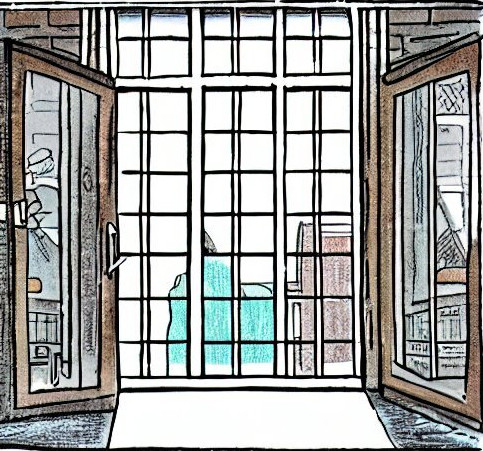

Open government
Apr 02, 2023 by DatWik
How does data march? In formation. Internet joke.

🌐 Need for government open data
Having a data portal with continuously widening and uninterrupted stream of data is something that every government at every level is expected to have in the modern world. Open operational and descriptive data helps to close the loop on accountability on taxpayer fund spendings and provide continuous tracking of what is happening at your local, regional or country levels. Open data helps local businesses to efficiently allocate their resources, researchers to monitor the ongoing processes, residents to influence the work of the government based on data insights rather than heresay.
It is not a small effort. Individual governments spend tens of millions of dollars per year either as targeted funds for dataset generation or as part of larger digital initiatives. And there is also multi-national groups that aim to coordinate those efforts, such as Open Government Partnership funding for 2022 was USD$12.5 million spanning 76 countries. Number of other initiatives exist, such as Open Data Institute, Global Initiative for Fiscal Transparency, Open Contracting Partnership, sunlight Foundation among others.
Data Portals website, which is run by Open Knowledge Foundation lists almost 600 government data portals around the globe.
Top 10 countries by number of portals as of April 2023
- United States: 97 portals
- Canada: 62 portals
- Brazil: 43 portals
- Italy: 32 portals
- Spain: 31 portals
- Australia: 25 portals
- France: 23 portals
- Great Britain: 19 portals
- South Korea: 16 portals
- Germany: 16 portals
♜ Types of available data
Open government portals typically have data organized into several sections, such as:
Budget and Finance: information on government expenditures, revenues, and budget planning.
Public Services: availability and quality of public services provided by the government, such as healthcare, education, transportation, and public safety.
Environment and Energy: environmental issues, such as air and water quality, waste management, and climate change, as well as energy consumption and production.
Demographics and Statistics: population, such as age, gender, and ethnicity, as well as economic and social statistics.
Laws and Regulations: laws, regulations, and policies enacted by the government.
Procurement: government contracts and procurement processes, including bid opportunities, contract awards, and vendor performance.
Performance and Accountability: government performance, such as program outcomes, service delivery, and operational efficiency, as well as accountability mechanisms like audits and evaluations.
Data is available in various formats: plain text data like csv, json, xml; various forms of geographic data; NetCDF for scientific data as well as other binary and proprietary formats like Excel and images.
🧭 How the data can be used?
There is a zoo of various licenses on these portals: Creative Commons, Open Data Commons, GPL, MIT, Apache, BSD, Mozilla Public, ODC-By-SA, CC0, Public Domain. For some you might get away with using data as you please with no restrictions or conditions. Others may require attribution, or you might have to apply same license to your work, conform to some conditions or not be able to use in commercial setting. And if you're still confused, don't hesitate to seek legal advice (or ask a savvy friend who passed the bar exam).
📜 Examples around the world
USA
- Federal Contract Data
- Consumer Complaint Data
- Patent Data
- Weather Data
- Wildfire Data
- Geospatial Data
- Food Safety Data
- Farm Income and Wealth Data
- National Parks Data
- Social Security Data
Canada
- Population Statistics
- Canadian Climate Data
- National Pollutant Release Inventory
- Canadian Open Government Portal
- Canada's Energy Future
- Canadian Environmental Sustainability Indicators
- Canadian Transportation Open Data
- Canadian Centre for Justice Statistics
- Canadian Institute for Health Information
- Canadian Public Safety and Emergency Preparedness
Australia
- Australian Bureau of Statistics
- Australian Institute of Health and Welfare
- Australian Geoscience Data Cube
- National Land and Water Resources Audit
- National Library of Australia Digital Collections
- Australian Government Web Archive
- Australian Antarctic Data Centre
- Australian Flora and Fauna
- Australian Broadcasting Corporation (ABC) Data Archives
- Australian National University Data Commons
Italy
- National Institute of Statistics (ISTAT)
- National Geoportal of Italy
- Open Data Trentino
- Open Data Lombardia
- National Archive of Criminal Records (ANACRIM)
- Italian Parliament Open Data
- OpenCoesione
- National Archaeological Museum of Naples
- Open Data Emilia-Romagna
- Open Data Sicilia
📌 Conclusion
Does your local government have open data portal? Does it contain useful data for you?
The more we use this data and the more we ask for it, the more incentive will be for government to refine, enhance and improve it.